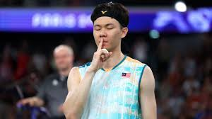
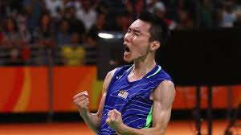
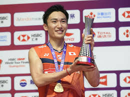

Introduction to Badminton player

Lee zi jia
is a Malaysian badminton player. He is a bronze medalist at the Olympic Games, Asian champion and All England champion.He is best known for his smash, especially his backhand smash, physical agility, speed and reflexes in men's singles.He was the men's singles gold medalist at the 2019 SEA Games and won his first BWF Super 1000 title at the 2021 All England Open.He was also the men's singles champion at the 2022 Badminton Asia Championships. He won a bronze medal in the men's singles event at the 2024 Summer Olympics, becoming the third Malaysian men's singles player to win a medal at the Olympic Games after Rashid Sidek and Lee Chong Wei.

Lee chong wei
is a Malaysian former professional badminton player. As a singles player, Lee was ranked first worldwide for 349 weeks, including a 199-week streak from 21 August 2008 to 14 June 2012.He is the fifth Malaysian player after Foo Kok Keong, Rashid Sidek, Roslin Hashim and Wong Choong Hann to achieve such a ranking (since official rankings were first kept in the 1980s), and is the only Malaysian shuttler who has held the number one ranking for more than a year.On 2 May 2023, Lee was inducted to BWF Badminton Hall of Fame.He is widely regarded as one of the greatest badminton players of all time.

Kento momota
was the best badminton player in the world, both in terms of accomplishments and rankings.
At the end 2019, he won the Badminton World Federation award for Best Male Player of the year, and was number one in the world rankings, having held top spot since September 2018. He is a six-time Japanese national champion and two-time world champion.Momota was born on September 1, 1994 in Kagawa Prefecture. He is 175cm tall and weighs 72kg.The left-hander started playing badminton when he was in the first grade of elementary school. In January 2007, when he was in sixth grade, he became number one in Japan at the National Elementary School Badminton Championship.